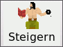

MAGUS - Hilfe
|
Bedienung
|
|||||||||||||||
Steigern & Verwalten MAGUS stellt zwei Verfahren zu Verfügung, um exisitierende Figuren zu steigern: Figuren können unkompliziert mit dem Zufallsgenerator gesteigert werden. Ein Abenteurer kann detailiert und individuell von Hand gesteigert werden. |
||||||||||||||||
| Zum Seitenanfang |